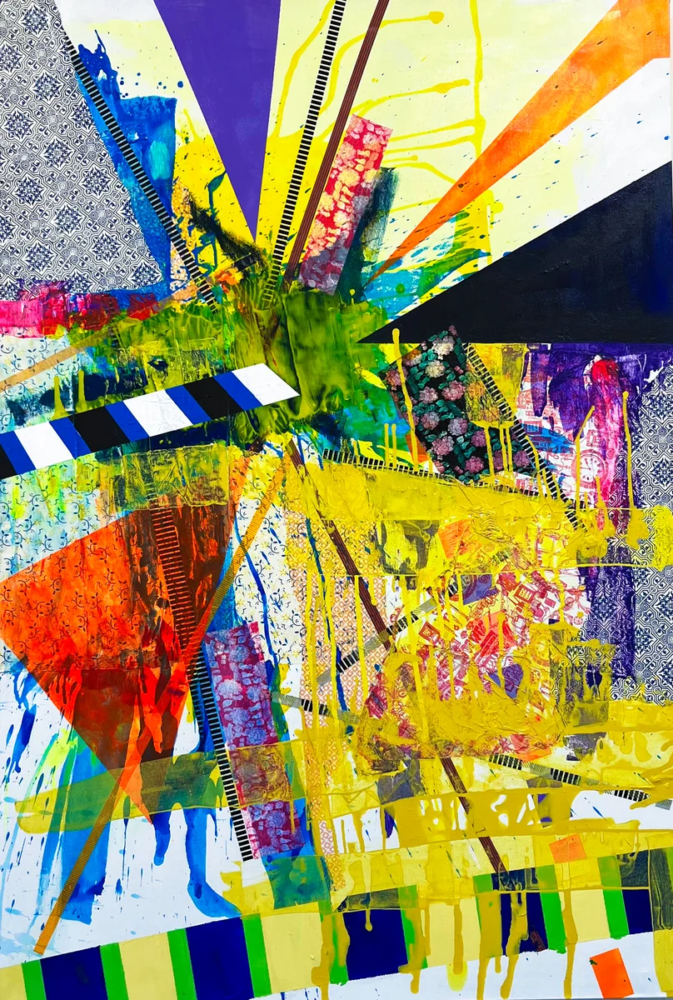

The Artists’ Gallery.
Discover original Irish art and the artists behind it.
Selected by PlotArt
Featured Artists
A changing selection of artists and their work.

Blowout Series II #2, 2021 · Leah Hewson Leah Hewson
Painting, Prints, installation, murals, sculpture.
Hewson has a First-Class BA(Hons) degree in Fine Art from IADT, Dublin Ireland.

Non-Serviam, 2018 · PIGSY PIGSY
Mixed Media Painting · Dublin
PIGSY is the artistic identity of Dublin-born Irish artist Ciarán McCoy. His practice centres on painting, exploring the psychological terrain of language, memory, identity and belonging through bold, instinctive mark-making.

The Universe is in me, 2025 · Rasher Mark Kavanagh Rasher Mark Kavanagh
Painter · Wicklow
Rasher, is a self-taught artist based in Wicklow. His emotionally resonating oil paintings have been exhibited and collected from Dublin London , San Francisco & Los Angeles exhibited at Chateau Marmont in 2006 .

Walk of life, 2025 · Fintan Whelan Fintan Whelan
Painter
Fintan Whelan (b. 1967, Dublin, Ireland) is an acclaimed contemporary Irish abstract painter exploring the interplay of colour, light, movement and organic form.

Uisce Salach I, 2024 · Anna Marie Savage · Photo: Simon Mills Anna Marie Savage
Painter
Anna Marie Savage is a visual artist based in Omeath, Co. Louth, whose practice centres on abstract oil painting informed by environmental research, fieldwork and microscopy.

Foxgloves and Gorse, 2026 · Daniel Chester Daniel Chester
Painter · Leitrim
Daniel Chester is a visual artist living in County Leitrim. He obtained a Masters in Visual Arts Practices from IADT in 2009, previously to that he received a Degree in Fine Art from Sligo IT in 2001.
Explore the collection
Explore More Artists

Position 07: Nessa McCormack
Painter · Wicklow

Position 23: Karen Ebbs
Painter, Colourist, Sculptor, Immersive Installation

Position 24: Sarah Fitzgibbon
Fine art printmaker specialising in screen printing.

Position 25: Olivia Jones
Visual Artist · Sligo

Lena Fawaz
Painter · Dublin

Carmel Marrinan
Abstract Expressionist artist .

Clare O'Connor
Abstract Painter, Printmaker
Founding positions
A record of PlotArt’s founding programme: twenty-five numbered positions, one for each Founding Artist. It is not a limit on the gallery: every published artist appears in the Artists’ Gallery above.
- 10 published
- 15 reserved
- Position 01: Leah Hewson
- Position 02: PIGSY
- Position 03: Rasher Mark Kavanagh
- Position 04: Daniel Chester
- Position 05: Anna Marie Savage
- Position 06: Fintan Whelan
- Position 07: Nessa McCormack
- Position 08: Reserved
- Position 09: Reserved
- Position 10: Reserved
- Position 11: Reserved
- Position 12: Reserved
- Position 13: Reserved
- Position 14: Reserved
- Position 15: Reserved
- Position 16: Reserved
- Position 17: Reserved
- Position 18: Reserved
- Position 19: Reserved
- Position 20: Reserved
- Position 21: Reserved
- Position 22: Reserved
- Position 23: Karen Ebbs
- Position 24: Sarah Fitzgibbon
- Position 25: Olivia Jones